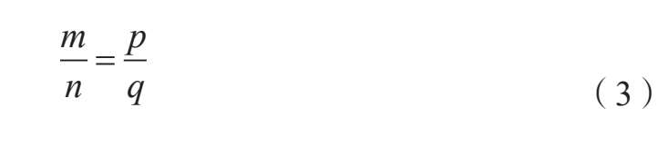
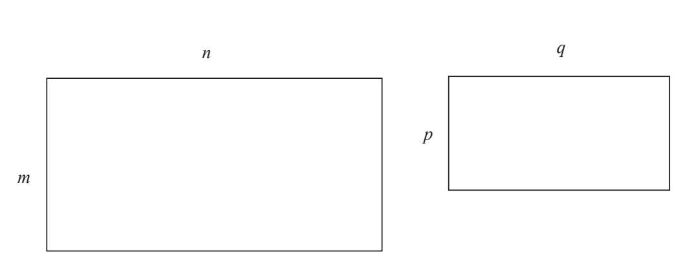
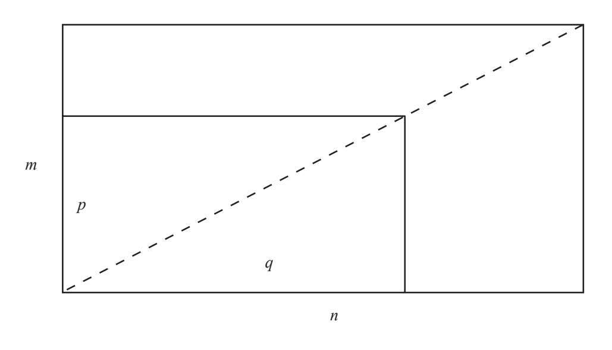

现如今，成年人的钱包和手提包里放着成堆的卡片：信用卡、名片、图书馆借书卡、健身房的会员卡、驾照、身份证等。他们每天把这些卡片拿出来放回去，却很少注意到一件毫不起眼的小事：大多数卡片的尺寸和形状相同，或者至少是长宽比例相同。
想要找出原因，最简单的方法就是测量和比较这些卡片的边长。大多数情况下，长宽之比非常接近1.618，也就是黄金比例。对于大多数卡片来说，长宽比相同绝非偶然，因为这种比例已经成为一个标准的尺寸。
我们用邻边之比来定义矩形的形状。如果比值相等，那么矩形的形状相同。用数学上的专业术语讲，邻边之比相同的矩形是相似矩形。因此，如果邻边为m和n的矩形与邻边为p和q的矩形（m<n且p<q）为相似矩形，需要满足：


有一个非常简单有效的方法，不需要纸笔，不用测量边长，也不用计算比值就能确定两个矩形是否为相似矩形。你只需要把小卡片和大卡片的对应顶点（角）重合到一起，然后从该顶点做一条对角线到斜对面的顶点。如果这条线同时是两张卡片的对角线，那么它们就是数学上所说的相似矩形。

m/n表示了矩形的特征，我们把它称为截面模数k，其中m/n=k。m/n的值越小，矩形拉伸得越长。另一个特别的例子是当m与n相等时，我们就得到了一个非常熟悉的图形——正方形。正方形是特殊的矩形，它的模数是1。所以，也许不是所有的矩形都与我们钱包和手提包里的卡片相似。如果我们观察电视和电影屏幕的演变，就可以清楚地发现矩形多种多样，并不只有黄金矩形一种。老电视机屏幕的比例为4:3。经过逐渐地演变，现代的宽屏数字电视屏幕有了新的标准，比例为16:9。这两个例子说明了矩形邻边长度之间的关系。在两台不同的电视机上同时观看电影，就能发现不同比例对图像产生的巨大影响。举例来说，老电视机显示的人物更加细长，在垂直方向拉得更长；而在宽屏电视中播放老电影，人物看上去又矮又胖。造成这种差别的原因究竟是什么？哪台电视机中的图像发生了扭曲？通过简单的计算，我们知道了这两种屏幕并不是相似矩形。从数学的角度来看，显然9/16≠3/4。通过计算得到3/4=0.75，而9/16=0.5625。老电视机的模数更大。为了填补拉长的屏幕，宽屏电视水平扭曲了老电视机中老电影的图像，让图像看上去更宽。
而4:3的屏幕更加接近正方形，如果在这种屏幕上观看专门为宽屏拍摄的电影，图像看上去会更窄。通常情况下，人们会裁剪左右两侧的图像以适应4:3的屏幕，这样不但无法看到全部图像，而且播放效果还会大打折扣。